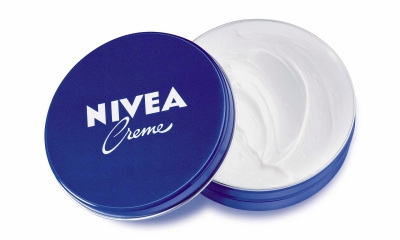

Using the Nivea Cream will help you in protecting your skin and soothing the dry skin all over your
body especially places like the elbows, heels, cuticles and all the body parts that need an extra bout
of hydration. You can use this soft and gentle Nivea Crème on your sensitive skin and the delicate
skin of babies as well.